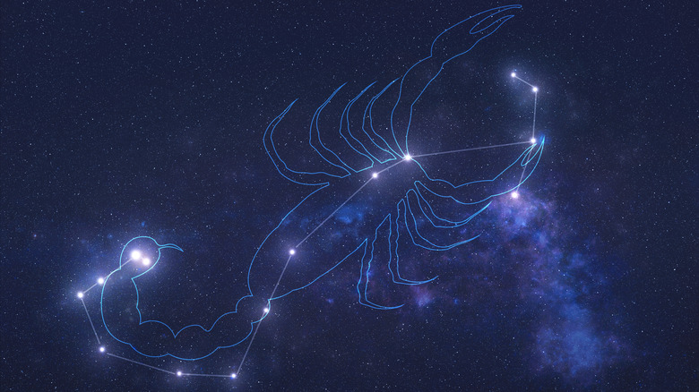

Antares é uma estrela gigante vermelha enorme e relativamente fria nos últimos estágios de sua existência
antes de se tornar uma supernova. Os astrônomos consideram que é uma supergigante vermelha típica.

Antares está a aproximadamente 600 anos-luz (180 pc) da Terra. A sua luminosidade visual é de cerca
de 10 000 vezes a do Sol, mas como a estrela irradia uma parte
considerável de sua energia na parte infravermelha do espectro, a sua luminosidade bolométrica é de 65 000 vezes a solar.
Antares localiza-se no coração do escorpião, com seu nome que se traduz como “anti-Ares” ou “como Marte”, referindo-se à
semelhança do tom vermelho da estrela com o planeta Marte.
Desenvolvedoras:
MARIA LUIZA GONÇALVES PEREIRA
NICOLY RILLARY BRITO DA SILVA